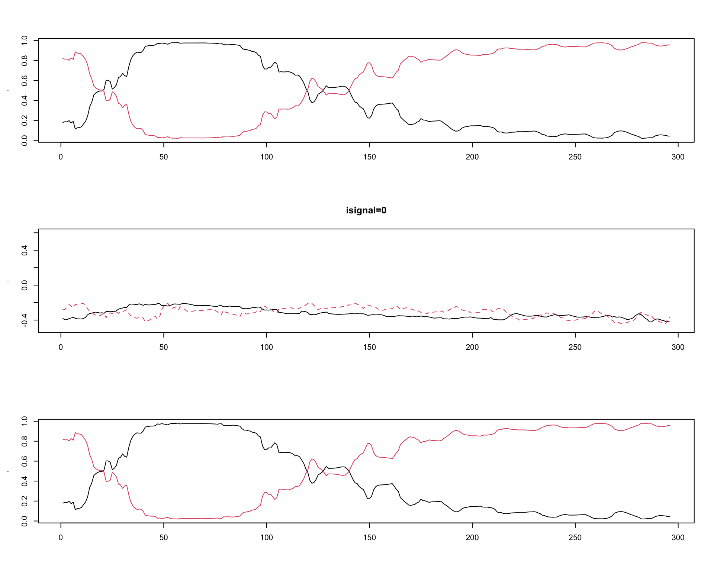
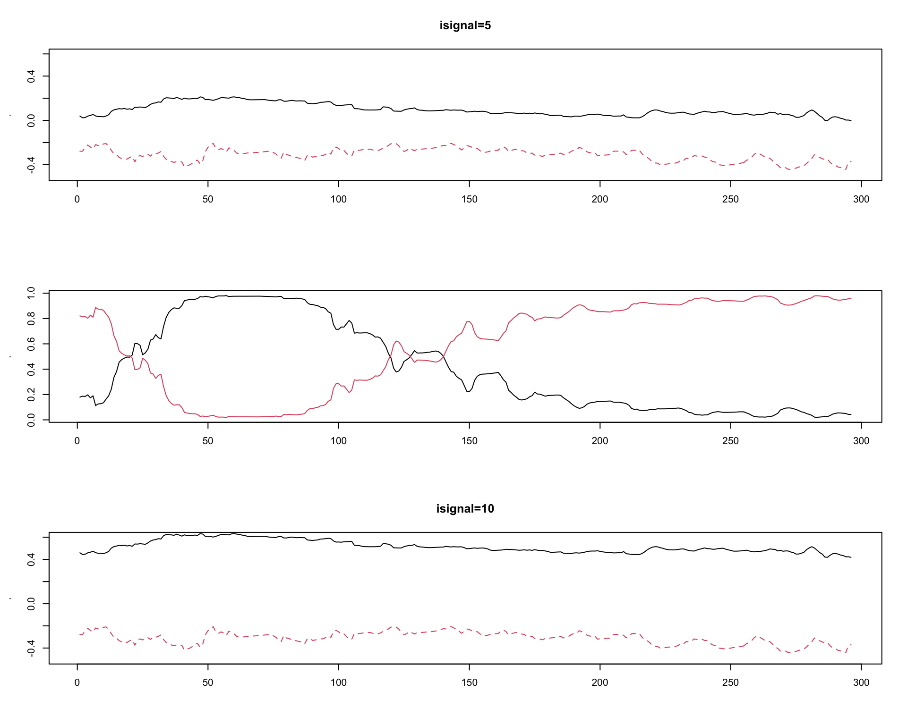

4 Generating synthetic data
Here are some simple functions to generate 1d data. This code uses data from the flowmix AOAS paper.
(More generally, the MCMC function takes mainly ylist, countslist, and X
as data.)
There are two scenarios we will test out in our paper:
One-dimensional data, two clusters. Keep censor boundaries, but move the top cluster towards top censor boundary.
One-dimensional data, two clusters. Keep means constant, but move the censor boundaries towards the center. (not done yet!)
First load existing cytogram data and flowmix model estimates.
(The two data files
MGL1704-hourly-paper-1d-diam.RDS, 1d-cvres.rds, which can be downloaded from the
flowmix R package, is assumed to be in inst/data from the base directory of the repository.)
## dat_1d = readRDS("~/Downloads/paper-data/MGL1704-hourly-paper-1d-diam.RDS")
# res = readRDS("~/Downloads/paper-data/1d-cvres.rds") %>% .$bestres
datadir = "../inst/data"
dat_1d = readRDS(file.path(datadir, "MGL1704-hourly-paper-1d-diam.RDS"))
res = readRDS(file.path(datadir, "1d-cvres.rds")) %>% .$bestres
## Take two clusters' model parameters (Picoeukaryotes and Prochlorococcus)
orig_model = list()
orig_model$alpha = res$alpha[c(3,4),,drop=FALSE]
orig_model$beta = res$beta[c(3,4)]
orig_model$sigma = res$sigma[c(3,4),1,1,drop=FALSE]
orig_model$dimdat = res$dimdat
orig_model$numclust = res$numclust
orig_model$TT = res$TT
## Covariates are the same
orig_model$X = res$X
## Save the "original model"
## saveRDS(orig_model, file=file.path("~/repos/flowcut/inst/output", "orig_model.RDS"))
## outputdir = "~/repos/flowcut/inst/output"
outputdir = "../inst/data"
saveRDS(orig_model, file=file.path(outputdir, "orig_sim_model.RDS"))Next, we’ll make several versions of this model with isignal from 0 to 10; (1)
isignal=0 means the means are completely overlapping. (2) isignal=10 is the
highest signal size (gap between the two means).
(TODO: Check object classes and restrict to flowmix or flowcut (but not flowtrend) model objects.)
#' From an original set of model parameters (|true_model|),
#' generate synthetic 2-cluster 1-dimensional data with equal probabilities.
#'
#' @param isignal 0 to 10, which generates the means.
#' @param orig_model Original model of class flowmix or flowcut; a list that
#' contains alpha, beta and TT.
#' @param shrink_alpha If TRUE, "shrink" the alpha coefficients to 40% their
#' size. Defaults to FALSE.
#'
#' @return A list with beta, mn, alpha, prob, X, sigma, TT, numclust.
#' @export
make_sim_model <- function(orig_model, isignal, shrink_alpha = FALSE){
## Setup
stopifnot(isignal %in% 0:10)
## stopifnot(class(orig_model) %in% c("flowmix")) ##, "flowcut"
new_model = orig_model
new_model$numclust = 2
## Calculate + renormalize the probabilities
link = cbind(1, orig_model$X) %*% t(orig_model$alpha)
new_model$prob = exp(link) / rowSums(exp(link))
new_model$prob %>% matplot(type = 'l', lty = 1)
## ## Probabilities
## alphamat = orig_model$alpha
## alphamat[,-1] = 0
## alphamat[,1] = 1
## new_model$alpha = alphamat
## ## new_model$prob = matrix(1/2, nrow = orig_model$TT, ncol = 2)
## cbind(1, new_model$X) %*% alphamat
## Take the two intercepts
intp_high = orig_model$beta %>% .[[1]]%>% .["intp",]
intp_low = orig_model$beta %>% .[[2]]%>% .["intp",]
increment = (intp_high - intp_low)/10
## Bring the larger mean down.
new_model$beta[[1]]["intp",] = intp_low + increment * isignal
new_model$mn = array(NA, dim = c(orig_model$TT, 1, 2))
new_model$mn[,,1] = (cbind(1,new_model$X)) %*% (new_model$beta[[1]])
new_model$mn[,,2] = (cbind(1,new_model$X)) %*% (new_model$beta[[2]])
## Shrink the probabilities to be closer to each other.
if(shrink_alpha){
Xta1 = (new_model$X) %*% ((new_model$alpha[1,-1]) * 0.40)
Xta2 = (new_model$X) %*% ((new_model$alpha[2,-1]) * 0.40)
##lines(exp(Xta1)/(exp(Xta1) + exp(Xta2)), ylim = c(0,1))
##lines(exp(Xta2)/(exp(Xta1) + exp(Xta2)), col = 'red')
new_model$prob[,1] = exp(Xta1)/(exp(Xta1) + exp(Xta2))
new_model$prob[,2] = exp(Xta2)/(exp(Xta1) + exp(Xta2))
}
## Optional: plot the means
if(FALSE){
new_model$mn[,1,] %>% matplot(type = 'l', lty = 1)
new_model$prob %>% matplot(type = 'l', lty = 1)
}
return(new_model)
}par(mfrow = c(3,1))
new_model = make_sim_model(orig_model, 0)
new_model$mn %>% .[,1,] %>% matplot(type='l', main = paste0("isignal=", 0), ylim = c(-0.5, 0.6))
new_model = make_sim_model(orig_model, 5)
new_model$mn %>% .[,1,] %>% matplot(type='l', main = paste0("isignal=", 5), ylim = c(-0.5, 0.6))
new_model = make_sim_model(orig_model, 10)
new_model$mn %>% .[,1,] %>% matplot(type='l', main = paste0("isignal=", 10), ylim = c(-0.5, 0.6))

Then, we will generate data from this model using the function gen_1d().
#' Generate 1d data with 2 clusters from a list (|true_model|)
#' containing true model parameters.
#'
#' @param true_model List containing beta, alpha, mn, prob, numclust.
#' @param nt Particles per time point.
#'
#' @return Cytograms (a |ylist| object)
#' @export
gen_1d <- function(true_model, nt = 1000){
## Setup
stopifnot(true_model$numclust == 2)
TT = dim(true_model$mn)[1]
## Generate cytograms
ylist = list()
for(tt in 1:TT){
## Generate memberships Samples |nt| memberships out of (1:numclust)
## according to the cluster probabilities in |prob|.
nt_by_clust = stats::rmultinom(1, size = nt, true_model$prob[tt,])
## draws = sample(1:numclust, size = nt, replace = TRUE, prob = true_model$prob[tt,])
draws = c(rep(1, nt_by_clust[1]), rep(2, nt_by_clust[2]))
y_onetime = list()
for(iclust in 1:true_model$numclust){
ntk = nt_by_clust[iclust]
membership = rep(iclust, ntk)
if(ntk == 0){
y_onetime[[iclust]] = NULL
} else {
y_onetime[[iclust]] =
cbind(MASS::mvrnorm(n = ntk,
mu = true_model$mn[tt,,iclust],
Sigma = true_model$sigma[iclust,,]))
}
}
y_onetime = purrr::compact(y_onetime)
y = do.call(rbind, y_onetime)
## Data
ylist[[tt]] = y
}
return(ylist)
}(TODO We’ll generate data particles with probability proportional to 1/biomass.)
Testing this function out.
## Generate data
set.seed(100)
new_model = make_sim_model(orig_model, 8)
ylist = gen_1d(new_model, nt = 100)
flowtrend::plot_1d(ylist, obj = new_model)
## Censor it
ylist = lapply(ylist, function(y){
y = pmin(y, 0.5)
})
flowtrend::plot_1d(ylist, obj = new_model)
## Form the censored "box"
Cbox = rbind(c(-Inf, 0.5)) (TODO: Maybe we will use fewer than 40 coefficients. Let’s get the top 10 coefficients by importance, and only use them.)